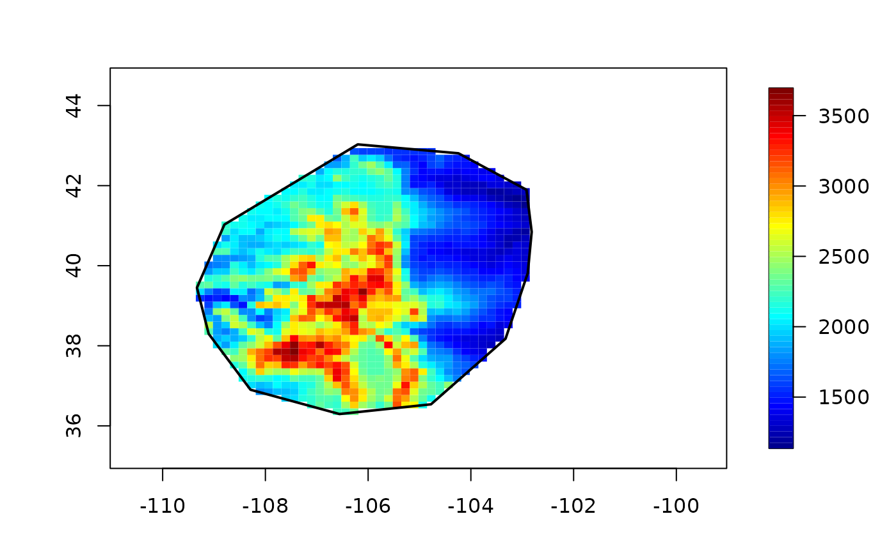

image2lz.RdThese function help in subsetting images or reducing its size by averaging adjecent cells.
crop.image(obj, loc=NULL,...)
which.max.matrix(z)
which.max.image(obj)
get.rectangle()
average.image(obj, Q=2)
half.image(obj)
in.poly( xd, xp, convex.hull=FALSE, inflation=1e-07)
in.poly.grid( grid.list,xp, convex.hull=FALSE, inflation=1e-07)A list in image format with the usual x,y defining the grid and z a matrix of image values.
A 2 column matrix of locations within the image region that define the subset. If not specified then the image is plotted and the rectangle can be specified interactively.
Number of pixels to average.
A 2 column matrix of locations that are the points to check for being inside a polygon.
A 2 column matrix of locations that are vertices of a polygon. The last point is assumed to be connected to the first.
If TRUE then the convex hull of xp is used
instead of the polygon.
A list with components x and y specifing the 2-d grid values. (See help( grid.list) for more details.)
A small expansion factor to insure that points precisely on the boundaries and vertices of the convex hull are included as members.
A matrix of numerical values
Graphics arguments passed to image.plot. This
is only relevant when loc is NULL and the locator function is called via
get.rectangle.
If loc has more than 2 rows then the largest rectangle
containing the locations is used.
Creates a subset of the image obj by taking
using the largest rectangle in the locations loc. This is useful
if one needs to extract a image that is no bigger in extant than som
edata location. If locations are omitted the parent image is plotted
and the locations from two mouse clicks on the image. Returned value is
an image with appropriate x,y and z components.
Given an image plots and waits for two mouse clicks that are returned.
Returns a list with components x, y, z
, and ind giving the
location of the maximun and value of the maximum in the image based
on the grid values and also on the indicies of the image matrix.
Takes passed image and averages the
pixel values and adjusts the grid to create an image that has a smaller
number of elements. If Q=2 in average.image it has the
same effect as half.image but might be slower -- if the original
image is mXn then half image will be an image (m/2)X(n/2). This begs the
question what happens when m or n is odd or when (m/Q) or (n/Q) are not
integers. In either case the largest rows or columns are dropped. (For
large Q the function might be modified to drop about half the
pixels at both edges.)
Determines whether the points xd,yd are
inside a polygon or outside. Return value is a logical vector with TRUE
being inside or on boundary of polygon. The test expands the polygon
slightly in size (on the order of single precision zero) to include
points that are at the vertices. in.poly does not really depend
on an image format however the grid version in.poly.grid is more
efficient for considering the locations on a regular grid
See also in.land.grid that is hard coded to work with the
fields world map.
drape.plot, image.plot, interp.surface, interp.surface.grid, in.land.grid
data(RMelevation)
# region defining Colorado Front Range
loc<- rbind( c(-106.5, 40.8),
c(-103.9, 37.5))
# extract elevations for just CO frontrange.
FR<- crop.image(RMelevation, loc)
image.plot( FR, col=terrain.colors(256))
which.max.image( FR)
#> $x
#> [1] -106.25
#>
#> $y
#> [1] 38.625
#>
#> $z
#> [1] 3975.202
#>
#> $ind
#> ix iy
#> [1,] 8 29
#>
# average cells 4 to 1 by doing this twice!
temp<- half.image( RMelevation)
temp<- half.image( temp)
# or in one step
temp<- average.image( RMelevation, Q=4)-> temp
image.plot( temp, col=terrain.colors(256))
# a polygon (no special meaning entered with just locator)
x1p<- c(
-106.2017, -104.2418, -102.9182, -102.8163, -102.8927, -103.3254, -104.7763,
-106.5581, -108.2889, -109.1035, -109.3325, -108.7980)
x2p<- c(
43.02978, 42.80732, 41.89727, 40.84566, 39.81427, 38.17618, 36.53810, 36.29542,
36.90211, 38.29752, 39.45025, 41.02767)
xp<- cbind( x1p,x2p)
image.plot( temp)
polygon( xp[,1], xp[,2], lwd=2)
# find all grid points inside poly
fullset<- make.surface.grid( list( x= temp$x, y= temp$y))
ind<- in.poly( fullset,xp)
# take a look
plot( fullset, pch=".")
polygon( xp[,1], xp[,2], lwd=2)
points( fullset[ind,], pch="o", col="red", cex=.5)
# masking out the image NA == white in the image plot
temp$z[!ind] <- NA
image.plot( temp)
polygon( xp[,1], xp[,2], lwd=2)

# This is more efficient for large grids:
# because the large number of grid location ( xg above) is
# never explicitly created.
ind<- in.poly.grid( list( x= temp$x, y= temp$y), xp)
# now use ind in the same way as above to mask points outside of polygon